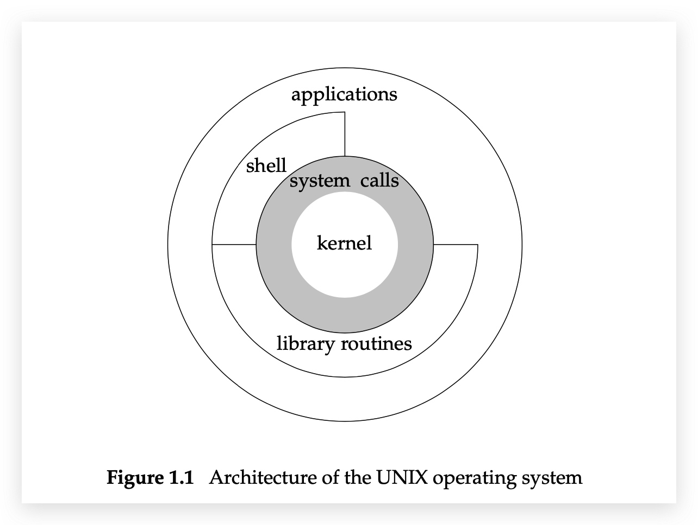

引言
操作系统都为它们所运行的程序提供服务，比如：执行新程序、打开文件、读文件、分配存储以及获得当前时间
UNIX体系结构
从严格意义上说，可将操作系统定义为一种软件，它控制计算机硬件资源，提供程序去年环境。称为内核kernal。
内核的接口被称为系统调用syscall。公用函数库构建在系统调用接口之上，应用程序既可使用函数库，也可使用系统调用。shell是一个特殊的应用程序，为运行其他应用程序提供了一个接口。
从广义上说，操作系统包括了内核和一些其它的软件，这些软件使得计算机能够发挥作用，并使计算机具有自己的特性

登录
登录名
用户登录账号、密码时，会去访问/etc/passwd文件
格式：登录名、加密口令、数字用户ID、数字组ID、注释字段、起始目录、shell程序
shell
shell是一个命令行解释器，它读取用户输入，然后执行命令
shell用户输入来源：终端（交互式shell），文件（shell脚本）
文件和目录
文件系统
UNIX文件系统是目录和文件的一种层次结构，起点是称为根root的目录。目录是一个包含目录项的文件。
文件名
目录中的各个名字称为文件名filename。
路径名
由斜线分隔的一个或多个文件名组成的序列构成路径名。以斜线开关的路径名称为绝对路径名，否则称为相对路径名
工作目录
每个进程都有一个工作目录，有时叫当前工作目录。相对路径名都从工作目录开始解释。可以用chdir函数去更改其工作目录
起始目录
登录时，工作目录设置为起始目录，在/etc/passwd文件中最后一个参数
输入和输出
文件描述符
文件描述符是内核用来标识一个特定进程正在访问的文件。通常是个小的非负整数。当内核打开或创建一个文件时，就会返回一个文件描述符，通过这个文件技术符对这个文件进行读写
标准输入、标准输出和标准错误
一般，每当运行一个新程序时，所有的shell都为其打开3个文件描述符，即标准输入、标准输出和标准错误。如果不做特殊处理，3个描述符都链接向终端
不带缓冲的I/O
函数open、read、write、lseek以及close
常量：STDIN_FILENO、STDOUT_FILENOT，STDERR_FILENO对应0、1、2，在<unistd.h>头文件中
标准I/O
标准I/O函数为那些不带缓冲的I/O函数提供了一个带缓冲的接口。
- 无需担心如何选取最佳的缓冲区大小
- 简化了对输入行的处理；
gets
程序和进程
程序
程序program是一个存储在磁盘上某个目录中的可执行文件。内核用exec函数，将程序读入内存，并执行程序。
进程和进程ID
程序的执行实例被称为进程process。UNIX系统确保每个进程都有一个唯一的数字标识符，称为进程ID，一个非负整数
|
进程控制
3个用于进程控制的主要函数：fork、exec和waitpid。
线程和线程ID
通常，一个进程只有一个控制线程thread–某一时刻执行的组机器指令。
好处：
- 多个控制线程分别作用于它的不同部分，不同代码处理不同部分，逻辑清晰
- 多个线程可以充分利用多处理器系统的并行能力
一个进程内的所有线程共享同一地址空间、文件描述符、栈以及与进程相关属性。线程的ID只在它所属的进程内起作用